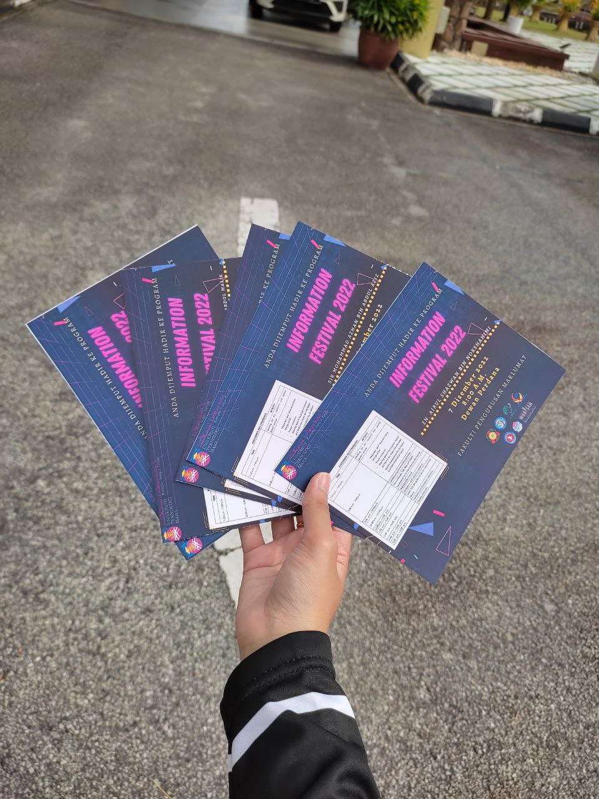

"🔍WE GO THROUGH EXPERIENCES, WE GROW THROUGH EXPERIENCES🔍"
A PREFECT✍
When I was in primary school, I became a prefect and I got to be a secretary. Then, in my secondary school, I became a prefect trial in form 1 and after that I officially became a prefect until form 5. When I was in form 2, I became a secretary in prefect exco. Meanwhile, in form 3 until the end of my school era, I was a treasurer in prefect exco. It was a wonderful experience as I am able to learnt on how to divide my time in academic, sports, and prefect matters wisely.
STORYTELLERS✍
When I was in primary school, I participated in storytelling. After the program, we got sponsored by Pizza Hut. This was a wonderful experience because it literally taught me to be brave in public speaking. Through storytelling, I am also able to watch my fellow friends and their different ways in expressing stories. Not only that, storytelling are also one of the reason I became interested in learning English language even more. Picture above was my friends and I appeared on newspaper in conjunction with the storytelling day. We felt so happy and proud that time.
MY INDUSTRIAL TRAINING✍
During my previous semester break, I undergo industrial training for about 1 month at National Library of Malaysia which occurred from 15 August 2022 until 24 September 2022. I did my internship at 10 different unit started from "Pembangunan Modal Insan" until Inter Library Loan unit. My favourite unit was Malay Manuscript Unit as it is related to history. I gained knowledge regarding various manuscript materials, the process on how the library able to obtain those materials, and how librarian handle those precious materials in the library. Actually, my internship ended on 23 September 2022, however, I became a volunteer for the library event on 24 September 2022 called "Program Singgah Santai." It was quite big event conducted by National Library of Malaysia as it was opened to the public and there were invited students from universities such as UiTM Puncak Perdana, Politeknik Sultan Salahuddin Abdul Aziz Shah, Saito University College, and Universiti Kuala Lumpur (UniKL) students. There were also well-known invited speakers which was a television presenter, Ahmad Fedtri Yahya and a pilot, Captain Shahirul Alim bin Aminudin. I was in charge in technical team and I need to control the whole slide throughout the program. At first, it was quite pressured as I am afraid if I made a mistake, however it turned out really well. This was precious experience as I officially ended my industrial training by became a volunteer that day. I also received a certificate from National Library of Malaysia as a symbol of appreciation in volunteering.
BUSINESS ACTIVITY✍
Recently, I involved with business activity through one course that I learnt in this final semester which is Fundamentals of Entrepreneurship (ENT300). Technically, this business activity were related to our individual assignment. I have never thought that I will joining the world of entrepreneurship but thanks to this course I gained new knowledge and experience related to business.
I sell perfume and brooch which my target user were among woman. However, there are few customers opposite gender bought my products as well for gift purposes. This business activity taught me to be confident and brave in promoting my products. Not only that, I also learnt on how to do Business Modal Canvas and basic cash flow which might be beneficial for me in the future meantime.
It cannot be denied this business activity was fun and satisfying especially whenever someone decided to buy my products as I gained a profit from it. It was a valuable experience.
INFORMATION FESTIVAL✍

A day before our event, "Program Info Fest" which was related to our group assignment Extension Services in Information Agencies (IMD314), I got the opportunity to sent an invitation card to our respective lecturers. It taught me to built good communication skills. After that, I returned to Dewan Perdana to decorate my class booth. Every preparation we did for the event were mostly depends on our own creativity. I literally learnt on how to make decision wisely and be responsible with every choice we make.
Then, during the day of the program, I was in charge to assist students who came to our booth in finding answers to the questions they obtained and gave them stickers if they are able to answer the question correctly. Through this duty on the program, I was able to embrace a piece of extrovert inside me.😂